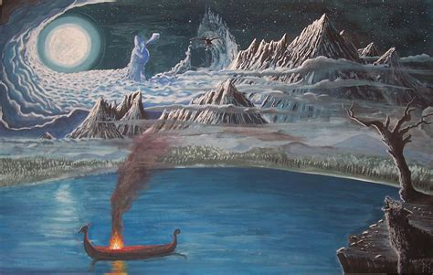
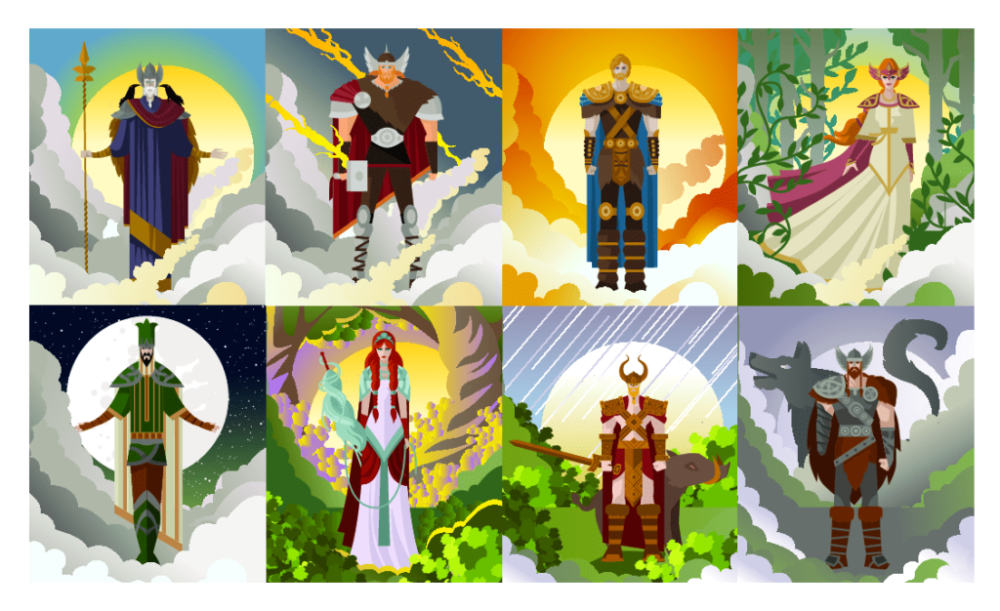
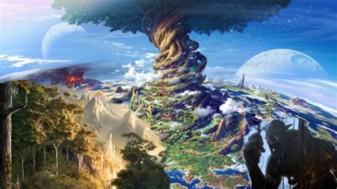
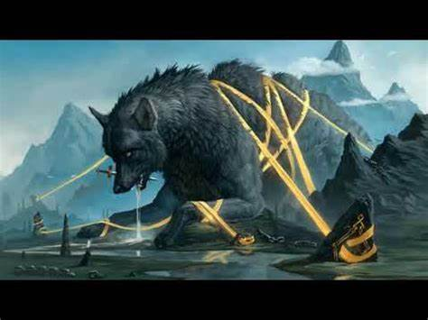

What is Norse Mthology?
Norse Mythology was a kind of religion which consisted of beliefs and legends that the Scandanavian people belived in. Scandanavia was where modern day Norway, Sweeden and Denmark are currently. These stories that were passed down consisted of Gods, Heroes and monstors. Norse Mythology is agrred upon to have been created around 1000 AD but traces of the root of these stories have been found from 500 AD or even longer ago.
Gods of Norse Mythology
There are many different kinds of Gods and Gods themselves in Norse Mythology. There is main gods such as Odin, Loki, Thor and many others who are most commonly mentioned in todays society due to popular franchises such as Marvel Movies and others. Apart from these gods there is more than 60 gods in Norse mythology however this does not include other species such as Demi-Gods, Giants, Elves, Spirits and creatures. Each God in Norse Mythology had their own theme that they were gods of such as Thor being god of Thunder
Realms in Norse Mythology
In norse mytology there is The Nine Realms. These realms consist of Alfheim [Realm of Elves], Asgard [Realm of Aesir], Helheim [Realm of the Dead], Jotunheim [Realm of Jotnar] Midgard [Realm of Humans], Muspelheim [Realm of Fire Giants], Niflheim [Realm of Ice and Mist], Svartalfheim [Realm of Dark Elves] and Vanaheim [Realm of Vanir Gods]. At the centre of all these realms is a sacred tree known as Yggdrasil.
Creatures of Norse Mythology
Within each of The Nine Realms they have their own type of creatures and beings, ranging from human like monsters to animalistic monsters. Some of the most popular are Draugr which are Norse Mythologys take on undead creatures or zombies. Dwarves who are masterfully skilled at blacksmithing and crafting and are depicted as short humans. As well as these there is others like Fenrir who is a giant wolf who is destined to break free from his restraints and during Ragnarok and kill Odin.
